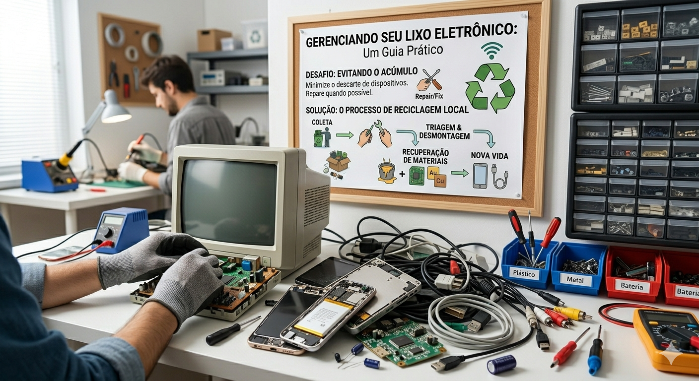
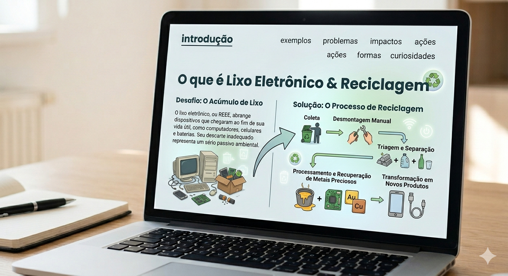

O lixo eletrônico, tecnicamente chamado de Resíduos de Equipamentos
Elétricos e Eletrônicos (REEE), abrange uma vasta gama de dispositivos que
chegaram ao fim de sua vida útil. Isso inclui desde pequenos aparelhos domésticos,
como secadores e micro-ondas, até tecnologias complexas como computadores, smartphones,
tablets e componentes internos como placas-mãe e baterias de lítio.
O grande desafio surge quando esses itens são descartados de forma negligente,
pois não são resíduos comuns e exigem um tratamento técnico específico para que não
se tornem um passivo ambiental irreversível.

